Bài: Sinh lý Synapse và Sự truyền tin qua Synapse (Synaptic Transmission)
Cơ chế dẫn truyền xung thần kinh qua synapse hóa học, cấu trúc, chức năng, hoạt động của các chất dẫn truyền thần kinh, vai trò điều hòa hưng phấn và ức chế.
Phần I: Sinh lý Synapse
Synapse (khớp thần kinh) là vùng tiếp xúc chuyên biệt giữa hai tế bào excitable (tế bào có khả năng hưng phấn), là nơi luồng thông tin truyền từ neuron này sang neuron khác hoặc từ neuron đến tế bào hiệu ứng (như tế bào cơ, tế bào tuyến). Quá trình dẫn truyền thông tin qua synapse đóng vai trò nền tảng trong mọi chức năng hoạt động của hệ thần kinh trung ương và ngoại vi.
1. Cấu trúc và phân loại Synapse
Dựa trên cơ chế truyền tín hiệu, synapse được chia làm hai loại chính: Synapse điện học (Electrical Synapse) và Synapse hóa học (Chemical Synapse). Dựa trên vị trí tiếp hợp giải phẫu vi thể, các synapse hóa học giữa các neuron được phân loại thành:
- Synapse trục - nhánh (Axodendritic): Tận cùng sợi trục tiếp xúc trên gai sợi nhánh (dendritic spines) hoặc thân sợi nhánh của neuron sau synapse. Đây là loại khớp nối phổ biến nhất, thường mang tính kích thích.
- Synapse trục - thân (Axosomatic): Tận cùng sợi trục tiếp xúc trực tiếp trên thân (soma) của tế bào neuron sau synapse, thường có vai trò điều hòa hoặc ức chế mạnh.
- Synapse trục - trục (Axoaxonal): Tận cùng sợi trục tiếp hợp trực tiếp lên sợi trục (thường là cúc tận cùng) của một neuron khác. Loại cấu trúc này là cơ sở giải phẫu cho hiện tượng ức chế hoặc tạo thuận tiền synapse.
| Đặc tính so sánh | Synapse Điện học (Electrical Synapse) | Synapse Hóa học (Chemical Synapse) |
|---|---|---|
| Khoảng cách khe synapse | Cực hẹp (~3.5 nm) | Rộng hơn nhiều (20 – 40 nm) |
| Cơ cấu liên kết vật lý | Liên kết khe (Gap junctions) tạo bởi connexon | Không liên kết trực tiếp; ngăn cách bởi khe synapse |
| Chất trung gian truyền tin | Dòng ion đi qua trực tiếp | Chất dẫn truyền thần kinh (Neurotransmitter) |
| Độ trễ dẫn truyền | Hầu như không có (tức thì) | Có độ trễ synapse (~0.5 ms) |
| Chiều dẫn truyền | Hai chiều (Bidirectional) | Một chiều duy nhất (Unidirectional) |
| Vị trí điển hình | Cơ tim, cơ trơn, nhân tiền đình ở não | Hệ thần kinh trung ương, tấm động cơ thần kinh-cơ |
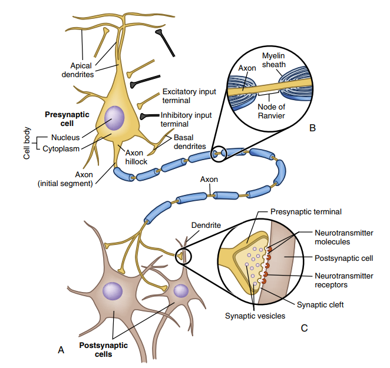
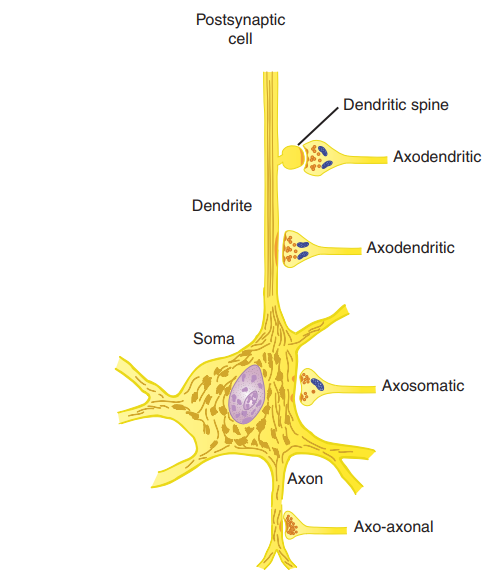
• Trục-nhánh (axodendritic - tận cùng trên các gai sợi nhánh),
• Trục-thân (axosomatic - tận cùng trực tiếp trên thân nơ-ron),
• Trục-trục (axoaxonal - tận cùng trên một sợi trục khác).
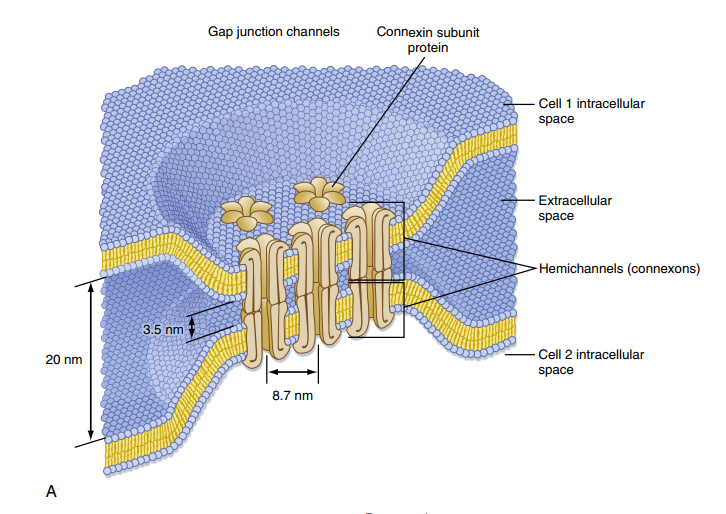
2. Chu chuyển túi màng và Cơ chế giải phóng chất dẫn truyền
Quá trình giải phóng chất dẫn truyền thần kinh tại synapse hóa học là một chuỗi các hoạt động phối hợp phân tử phức tạp, diễn ra theo chu kỳ túi chứa (vesicle cycle):
-
Nảy chồi và Tải nạp Các túi synapse (synaptic vesicles) nảy chồi từ endosome sớm ở cúc tận cùng, tích cực nạp đầy chất dẫn truyền nhờ bơm proton hoạt động bằng ATP tạo gradient điện hóa để đồng vận chuyển chất dẫn truyền.
-
Dịch chuyển và Neo đậu (Docking) Các túi chứa di chuyển đến vùng hoạt động (active zone) sát màng trước dưới sự hướng dẫn của khung xương tế bào và neo đậu (dock docking) tại đây nhờ các tương tác protein ban đầu.
-
Mồi (Priming) Đây là bước biến đổi cấu trúc protein chuẩn bị cho sự hòa màng diễn ra cực nhanh khi có tín hiệu. Các protein SNARE liên kết chặt chẽ với nhau tạo lực căng ép túi màng sát màng sinh chất.
-
Đi vào của dòng Ca2+ và Hòa màng (Exocytosis) Điện thế động khử cực cúc tận cùng, kích hoạt mở các kênh Ca2+ phụ thuộc điện thế. Ca2+ tràn vào cúc tận cùng gắn vào synaptotagmin (cảm biến Ca2+ trên màng túi). Sự kết hợp này kích hoạt hoạt hóa CaM-kinase II (calmodulin-dependent protein kinase II), enzyme này phosphoryl hóa synapsin (protein neo giữ túi vào khung actin), giải phóng thêm túi chứa tự do di chuyển đến vùng hoạt động. Phức hợp SNARE nhanh chóng hoàn tất sự hòa màng, giải phóng chất dẫn truyền qua lỗ hòa màng vào khe synapse.
- v-SNARE (vesicle SNARE): Protein trên màng túi, đại diện là synaptobrevin.
- t-SNARE (target SNARE): Protein trên màng tế bào trước synapse, đại diện là syntaxin và SNAP-25.
- Rab3: GTPase nhỏ điều hòa quá trình lắp ráp và hoạt động của phức hợp SNARE.
-
Nhập bào tái chế (Endocytosis) Màng túi sau khi giải phóng chất dẫn truyền được bao bọc bởi một lớp áo protein clathrin, hình thành hố clathrin để nhập bào tái chế trở lại cúc tận cùng, hòa màng vào endosome sớm để bắt đầu chu trình mới.
Bên cạnh con đường nhập bào qua hố clathrin thông thường, màng trước synapse còn sử dụng cơ chế "Kiss-and-run" (Chạm và chạy). Trong cơ chế này, túi synapse không hòa màng hoàn toàn mà chỉ tạo một lỗ nhỏ (fusion pore) tạm thời để phóng thích nhanh chất dẫn truyền ra ngoài rồi lập tức đóng lỗ, tách ra và quay trở về bể chứa. Cơ chế này diễn ra cực nhanh, giúp bảo toàn màng tế bào và tránh cạn kiệt túi chứa trong điều kiện neuron bị kích thích liên tục với tần số cao.
Tín hiệu hóa học tại khe synapse được chấm dứt nhanh chóng thông qua 4 con đường kết thúc tác dụng:
Chất dẫn truyền tự khuếch tán ra khỏi khe synapse vào khoảng kẽ xung quanh.
Các enzyme chuyên biệt tại khe phân hủy chất dẫn truyền (ví dụ: acetylcholinesterase phân hủy acetylcholine).
Màng trước synapse hoặc tế bào thần kinh đệm (glial cells) xung quanh chủ động vận chuyển ngược chất dẫn truyền về nội bào qua các kênh symport phụ thuộc Na+.
Chất dẫn truyền gắn vào các autoreceptor (thụ thể tự thụ) ở màng trước, tạo phản hồi âm ức chế phóng thích thêm chất dẫn truyền trong các xung động tiếp theo.
🩺 Mối liên hệ lâm sàng: Độc tố Uốn ván và Thịt độc (Clostridium Toxins)
Độc tố uốn ván (Tetanus toxin) và độc tố thịt (Botulinum toxin) là những protease cực mạnh do vi khuẩn
tiết ra. Chúng xâm nhập vào cúc tận cùng và cắt đứt các protein trong phức hợp SNARE:
• Botulinum toxin: Cắt t-SNARE (SNAP-25 hoặc syntaxin) tại tận cùng thần kinh -
cơ,
ngăn chặn giải phóng acetylcholine gây liệt mềm (flaccid paralysis).
• Tetanus toxin: Vận chuyển ngược dòng sợi trục về tủy sống, cắt v-SNARE
(synaptobrevin) trong các neuron liên hợp ức chế (tiết GABA/Glycine) làm mất tác dụng ức chế lên
neuron
vận động alpha, gây co cứng cơ liên tục và giật rung (spastic paralysis).
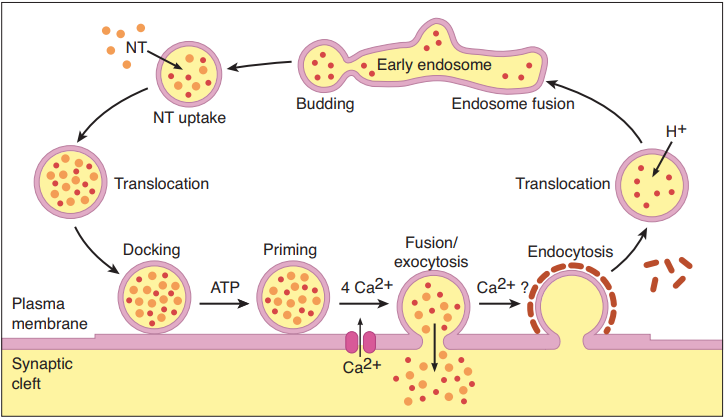
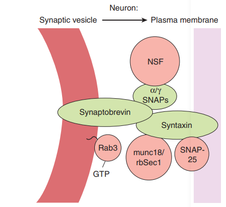
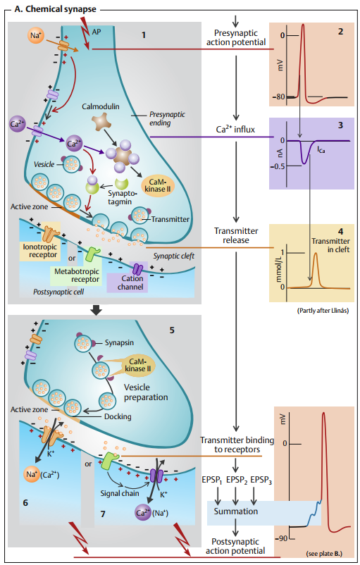
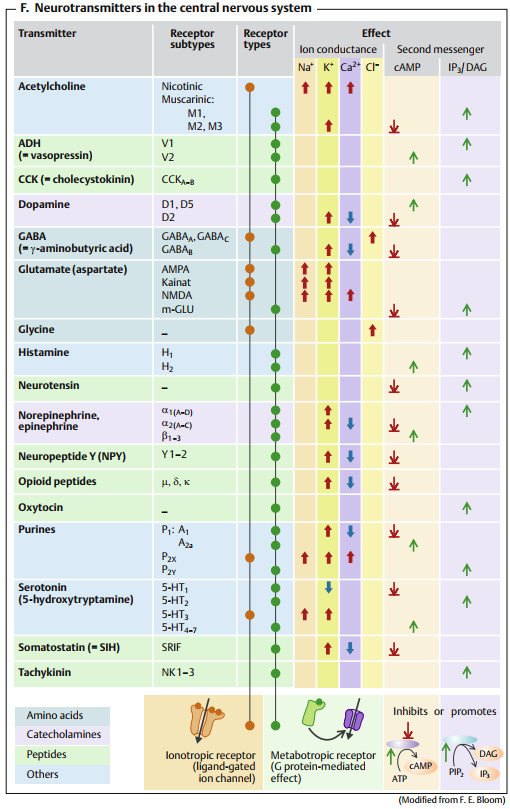
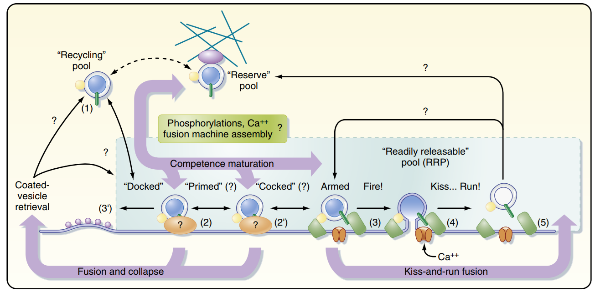
Phần II: Sự truyền tin qua Synapse
3. Sự Tích hợp tín hiệu và Điện thế sau Synapse (EPSP/IPSP)
Khi chất dẫn truyền thần kinh gắn vào các thụ thể ở màng sau synapse, chúng làm thay đổi tính thấm ion của màng và tạo ra hai loại điện thế cục bộ sau synapse (postsynaptic potentials):
- EPSP (Excitatory Postsynaptic Potential - Điện thế kích thích sau synapse): Do sự mở kênh ion cho phép các cation (như Na+ hoặc Ca2+) đi vào tế bào, gây khử cực màng sau synapse hướng tới ngưỡng tạo điện thế hoạt động.
- IPSP (Inhibitory Postsynaptic Potential - Điện thế ức chế sau synapse): Do sự mở kênh K+ (K+ đi ra ngoài) hoặc mở kênh Cl- (Cl- đi vào trong), gây tăng phân cực màng sau synapse (hyperpolarization), làm cho điện thế màng xa ngưỡng tạo điện thế hoạt động. Đồng thời, việc mở các kênh này làm giảm điện trở màng sau synapse, gây ra hiện tượng "đoản mạch" (shunting effect) triệt tiêu các dòng điện kích thích kế cận.
Mỗi EPSP hay IPSP riêng lẻ có biên độ rất nhỏ (dưới ngưỡng) và không thể tự kích hoạt một điện thế động. Neuron sau synapse sẽ thực hiện quá trình tích hợp tín hiệu (Synaptic Integration) thông qua hai cơ chế cộng gộp điện thế:
- Cộng gộp không gian (Spatial Summation): Nhiều synapse ở các cúc tận cùng khác nhau trên cùng một neuron đồng loạt giải phóng chất kích thích cùng một lúc. Các EPSP lan truyền cục bộ đến thân và cộng gộp biên độ lại với nhau tại gò sợi trục (axon hillock) để đạt ngưỡng tạo điện thế hoạt động.
- Cộng gộp thời gian (Temporal Summation): Một cúc tận cùng kích thích duy nhất phóng thích liên tục với tần số cao. Do EPSP có thời gian kéo dài nhất định, các EPSP sau xuất hiện trước khi EPSP trước biến mất hoàn toàn sẽ cộng dồn lên nhau cho đến khi vượt ngưỡng.
Ảnh hưởng của vị trí synapse và đặc tính màng: Một EPSP tạo ra ở nhánh xa của đuôi gai khi truyền đến thân tế bào (soma) sẽ bị suy giảm biên độ do điện thế màng lan truyền thụ động theo mô hình cáp (cable properties). Nếu hai synapse kích thích nằm quá sát nhau trên một nhánh đuôi gai, hiện tượng cộng gộp dưới mức tuyến tính (sub-linear summation) sẽ xảy ra do động lực điện hóa của các ion bị giảm khi dòng điện rò rỉ cục bộ qua màng.
Khả năng cộng gộp của neuron phụ thuộc vào hai hằng số lý lý tính của màng:
- Hằng số thời gian (Time constant - τ) Thời gian cần thiết để điện thế màng đạt 63% biên độ cực đại. Hằng số τ càng lớn thì EPSP kéo dài càng lâu, giúp neuron dễ thực hiện cộng gộp thời gian.
- Hằng số chiều dài (Length constant - λ) Khoảng cách dọc theo sợi nhánh mà tại đó điện thế giảm xuống còn 37% giá trị ban đầu. Hằng số λ càng lớn thì điện thế động ít bị suy giảm dọc theo sợi nhánh, tạo điều kiện thuận lợi cho cộng gộp không gian tại gò sợi trục.
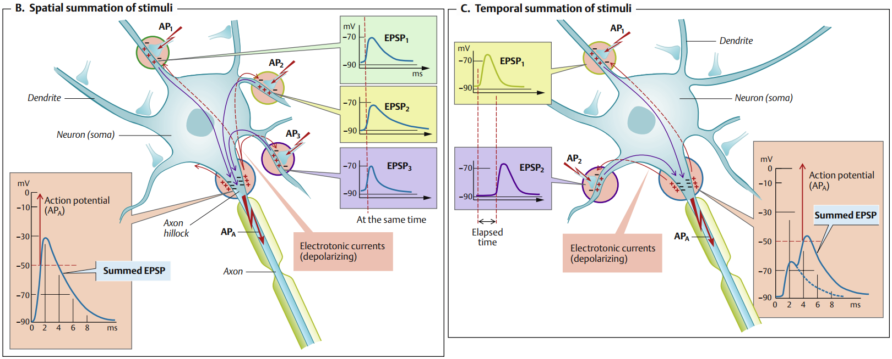
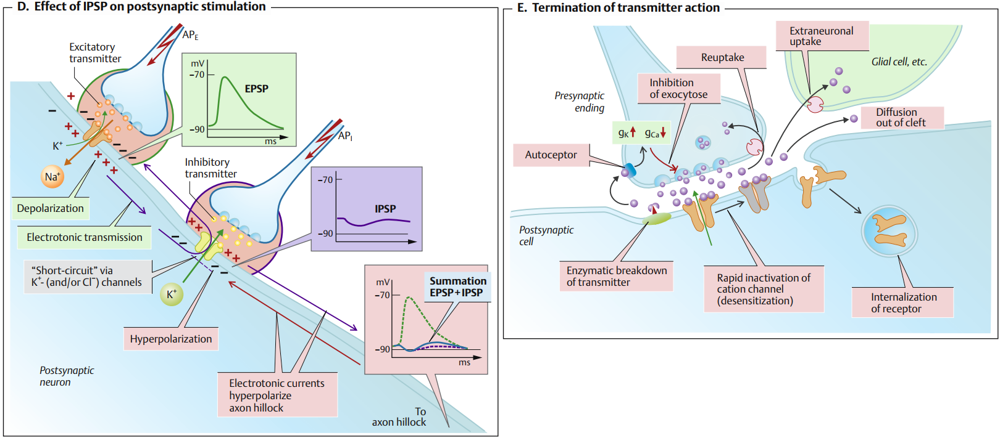
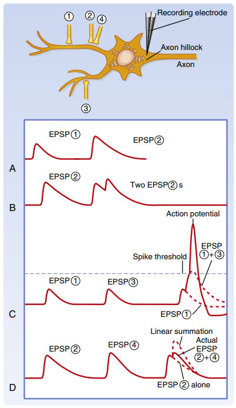
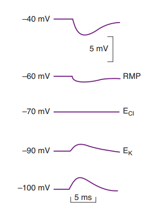
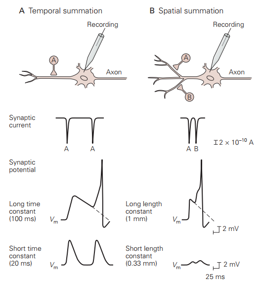
4. Tính mềm dẻo, Ức chế và Tạo thuận tiền synapse
Hiệu suất dẫn truyền thông tin qua synapse không cố định mà có thể được điều chỉnh linh hoạt (synaptic plasticity) tùy thuộc vào trạng thái hoạt động của tế bào hoặc ảnh hưởng của các chất điều hòa ngược:
- Ức chế tiền synapse (Presynaptic Inhibition): Do khớp nối trục-trục (axoaxonal). Nhánh sợi trục ức chế giải phóng chất dẫn truyền (như GABA) tác động lên cúc tận cùng kích thích, hoạt hóa thụ thể gây mở kênh Cl- hoặc K+. Sự tăng phân cực cục bộ này làm yếu đi điện thế động đi tới, dẫn đến mở ít kênh Ca2+ hơn và giảm lượng chất dẫn truyền kích thích được giải phóng.
- Tạo thuận tiền synapse (Presynaptic Facilitation): Xảy ra khi một sợi trục tạo thuận kích hoạt giải phóng chất dẫn truyền làm đóng kênh K+ ở cúc tận cùng kế cận. Việc này làm kéo dài thời gian khử cực của điện thế động đi tới, giữ kênh Ca2+ mở lâu hơn và tăng lượng chất dẫn truyền giải phóng.
- Ức chế phản hồi âm qua tế bào Renshaw: Đây là cơ chế tự giới hạn quan trọng trong tủy sống. Neuron vận động alpha phát xung co cơ đồng thời cho ra một nhánh bên kích thích tế bào liên hợp Renshaw. Tế bào Renshaw lập tức tiết ra chất dẫn truyền ức chế glycine quay lại synapse ức chế chính neuron vận động alpha đó, giúp tự hãm nhịp độ phát xung để tránh co cứng cơ quá mức.
- Tăng cường sau uốn ván (Post-tetanic potentiation - PTP): Hiện tượng tăng đáp ứng mạnh mẽ sau khi synapse bị kích thích tần số cao liên tục (tetanus). Việc kích thích dồn dập khiến lượng Ca2+ nội bào đi vào liên tục vượt quá khả năng dọn dẹp của bơm Ca2+-ATPase và ty thể, lượng Ca2+ tồn dư (residual Ca2+) tích tụ nồng độ cao trong cúc tận cùng giúp tăng cường giải phóng lượng lớn chất dẫn truyền thần kinh ở các xung đơn lẻ tiếp theo.
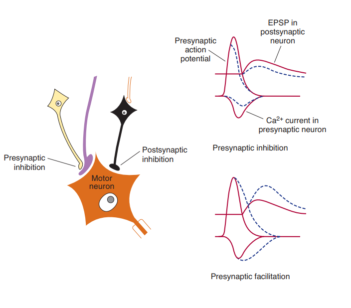
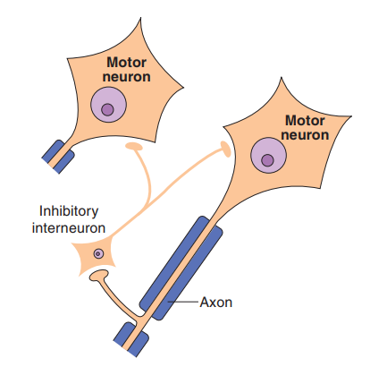
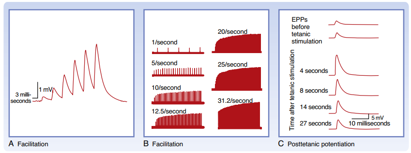
5. Receptor và Chuyển hóa của các Chất dẫn truyền cụ thể
Hoạt động dẫn truyền hóa học phụ thuộc vào cấu trúc của thụ thể sau synapse (receptors) và các con đường tổng hợp, dọn dẹp chất dẫn truyền:
Là một protein phức hợp vừa có vị trí gắn phối tử vừa chứa kênh dẫn truyền ion xuyên màng. Khi chất dẫn truyền gắn vào, kênh mở lập tức cho dòng ion đi qua trực tiếp. Đáp ứng cực nhanh (vài mili giây). Ví dụ: thụ thể Nicotinic ACh, thụ thể GABAA, các thụ thể glutamate AMPA và NMDA.
Là thụ thể xuyên màng 7 đoạn liên kết với Protein G. Khi gắn chất dẫn truyền, nó kích hoạt Protein G kích thích hoặc ức chế các enzyme nội bào (như adenylate cyclase, phospholipase C) để tạo ra các chất truyền tin thứ hai (cAMP, IP3/DAG). Tác dụng chậm nhưng kéo dài và có tính khuếch đại tín hiệu cao. Ví dụ: thụ thể Muscarinic ACh, GABAB, các thụ thể metabotropic glutamate (mGluR).
Chuyển hóa và cơ chế của các chất dẫn truyền thần kinh cụ thể:
- Glutamate: Là chất dẫn truyền thần kinh kích thích chính trong hệ thần kinh trung
ương.
- Chu trình Glutamate-Glutamine: Sau khi kích thích màng sau synapse, glutamate được dọn dẹp khỏi khe synapse chủ động bởi các bơm vận chuyển trên tế bào thần kinh đệm (astrocytes). Tại đây, enzyme glutamine synthetase chuyển glutamate thành glutamine (không hoạt động). Glutamine được vận chuyển ngược về neuron trước synapse, chuyển lại thành glutamate nhờ enzyme glutaminase để tái đóng gói vào túi.
- Thụ thể NMDA (N-methyl-D-aspartate): Thụ thể ionotropic đặc biệt đóng vai trò quan trọng trong học tập và trí nhớ. Ở trạng thái nghỉ, kênh bị chặn bởi ion Mg2+ (Mg2+ block). Để kênh mở cho Ca2+ và Na+ đi vào tế bào, màng sau synapse phải đang khử cực (ví dụ nhờ hoạt động trước đó của thụ thể AMPA) để đẩy viên Mg2+ ra ngoài, đồng thời bắt buộc phải có cả Glutamate và Glycine (đồng thụ thể) cùng gắn vào thụ thể.
- GABA (Gamma-Aminobutyric Acid): Chất dẫn truyền thần kinh ức chế chính ở não bộ.
- Thụ thể GABAA: Thụ thể ionotropic gắn kênh mở dòng Cl- đi vào tế bào, gây tăng phân cực nhanh, ức chế neuron lập tức.
- Thụ thể GABAB: Thụ thể metabotropic liên kết protein G làm mở kênh K+ đi ra ngoài hoặc đóng kênh Ca2+ đi vào, gây điện thế ức chế chậm và kéo dài.
- Acetylcholine (ACh): Chất dẫn truyền thần kinh tại tấm động cơ thần kinh-cơ và hệ
thần kinh tự chủ.
- Được tổng hợp từ Choline và Acetyl-CoA nhờ enzyme ChAT (Choline acetyltransferase) trong cúc tận cùng.
- Sau khi phóng thích vào khe synapse hẹp, ACh bị phân hủy tức thì bởi enzyme Acetylcholinesterase (AChE) thành choline và acetate để chấm dứt tác dụng nhanh chóng.
- Choline tự do được thu hồi tái sử dụng nhờ bơm đồng vận chuyển Choline phụ thuộc Na+ (CHT - Choline transporter).
- Catecholamines (Norepinephrine, Dopamine) & Serotonin:
- Được giải phóng vào khe synapse và dọn dẹp chủ yếu nhờ cơ chế tái hấp thu (reuptake) chủ động qua các kênh vận chuyển đặc hiệu trên màng trước synapse: NET cho Norepinephrine, DAT cho Dopamine và SERT cho Serotonin.
- Phần chất dẫn truyền thu hồi về nội bào nếu không được đóng gói lại vào túi sẽ bị phân giải bởi enzyme MAO (Monoamine oxidase) nằm trên màng ngoài ty thể.
- Neuropeptides và Chất khí (NO):
- Neuropeptides: Tổng hợp tại thân neuron dưới dạng tiền chất, đóng gói vào các túi lõi đặc lớn (large dense-core vesicles), giải phóng chậm và lan tỏa ra ngoài khe synapse tạo tác dụng điều hòa.
- Nitric Oxide (NO): Là chất dẫn truyền dạng khí độc đáo. Được tổng hợp từ L-arginine theo nhu cầu khi Ca2+ nội bào tăng, khuếch tán tự do qua màng lipid của cả neuron trước và sau synapse (dẫn truyền ngược dòng - retrograde messenger) kích hoạt guanylyl cyclase tạo cGMP mà không cần đóng gói hay hòa màng túi chứa.
🩺 Ứng dụng Y khoa Cao lâm sàng (High-Yield Clinical Correlation)
- Bệnh Nhược cơ (Myasthenia Gravis): Bệnh lý tự miễn do cơ thể sản sinh kháng thể tự miễn chống lại thụ thể Nicotinic Acetylcholine (nAChR) ở màng sau synapse của tấm động cơ thần kinh-cơ. Hậu quả làm giảm số lượng thụ thể chức năng và phá hủy cấu trúc nếp gấp sau synapse, gây yếu cơ tiến triển tăng lên khi vận động. Điều trị sử dụng thuốc ức chế enzym phân hủy acetylcholinesterase (như Neostigmine, Pyridostigmine) để tăng nồng độ ACh tại khe synapse.
- Thuốc chống trầm cảm nhóm SSRIs: Các thuốc ức chế tái hấp thu Serotonin có chọn lọc (Selective Serotonin Reuptake Inhibitors - SSRIs như Fluoxetine, Sertraline) hoạt động bằng cách ngăn chặn hoạt động của kênh vận chuyển SERT trên màng trước synapse. Kết quả là làm tăng nồng độ và kéo dài thời gian tác dụng của Serotonin tại khe synapse ở não bộ, hỗ trợ điều hòa tâm trạng.
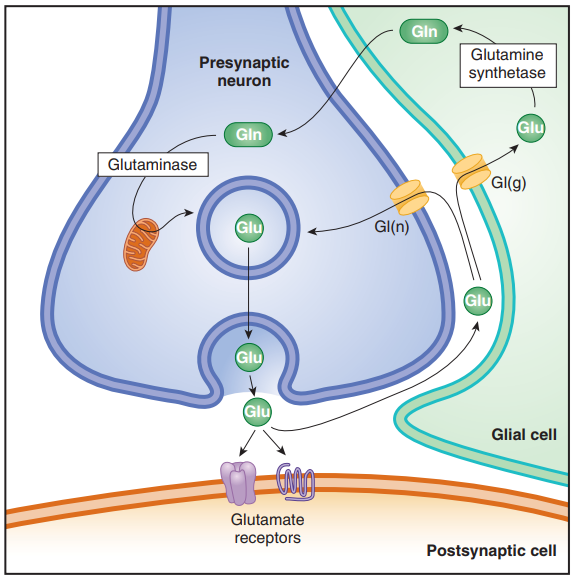
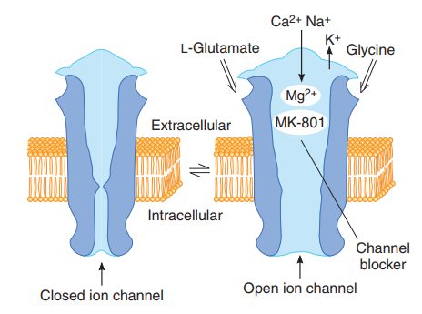
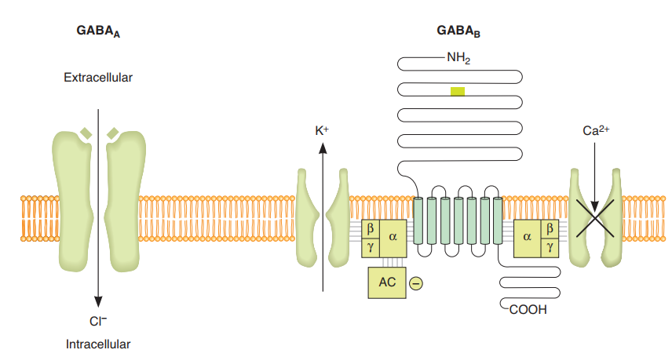
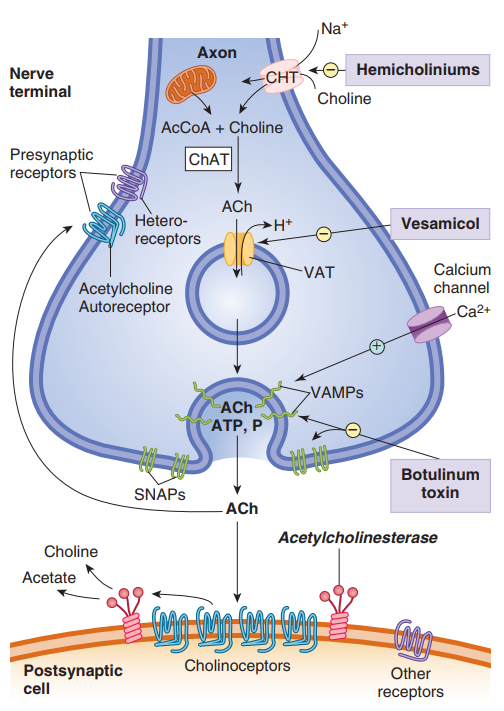
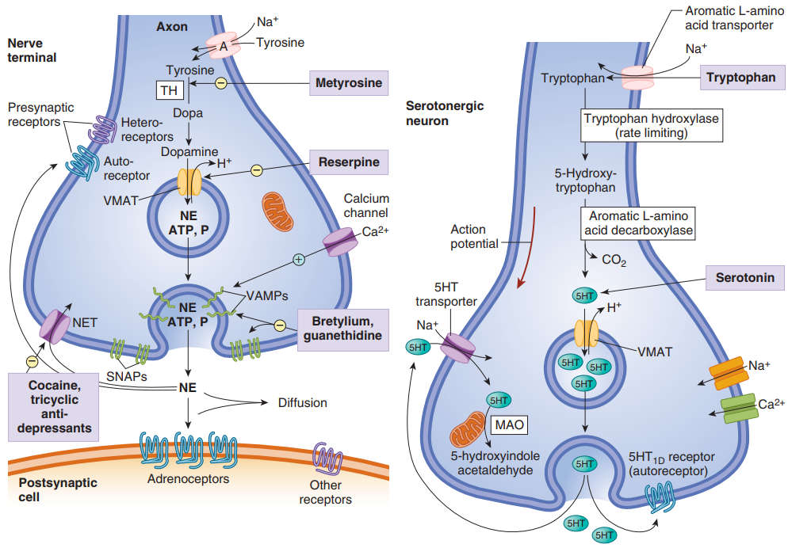
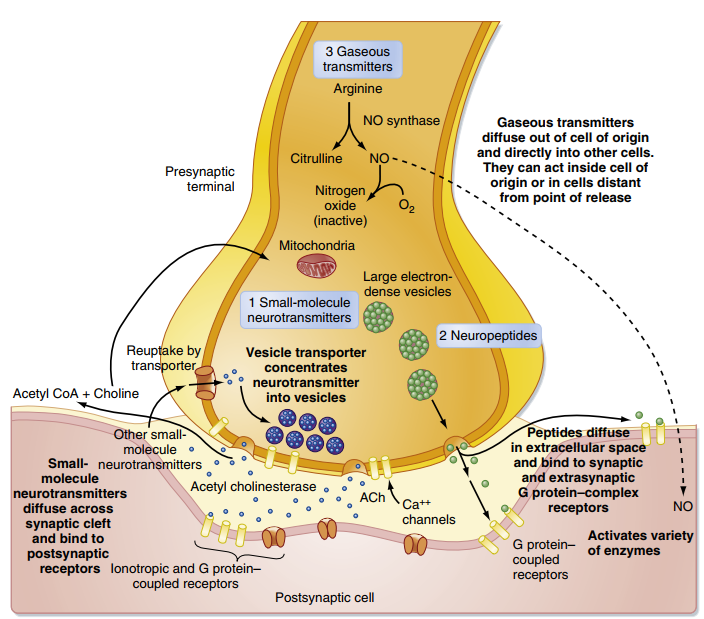
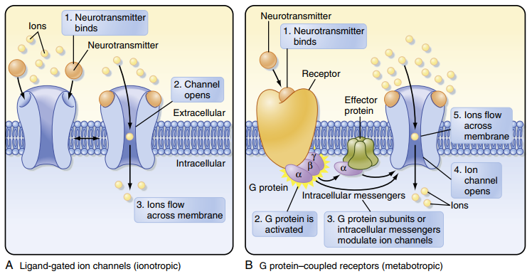
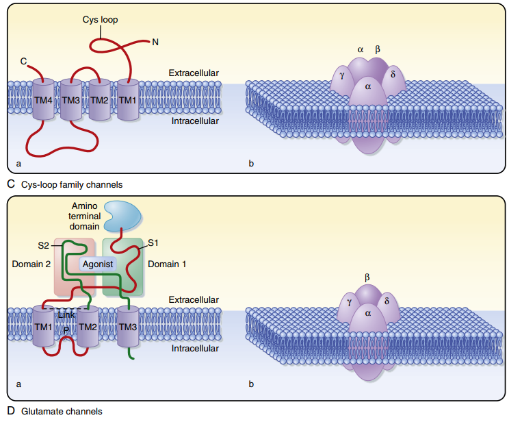